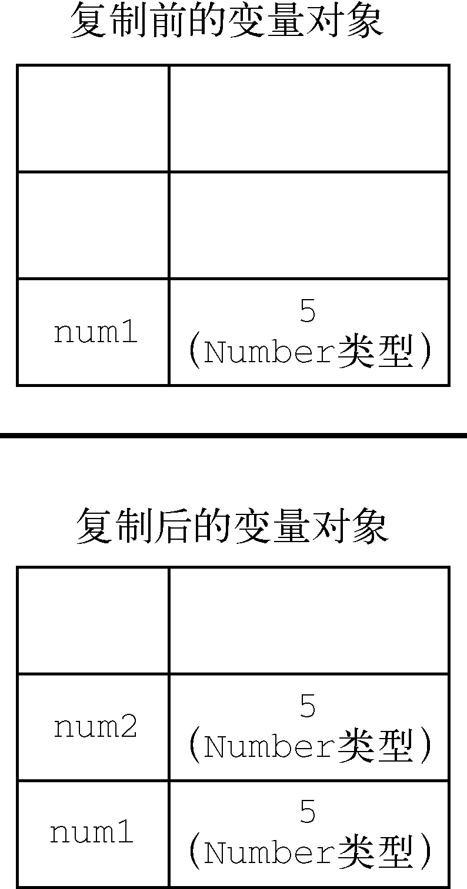
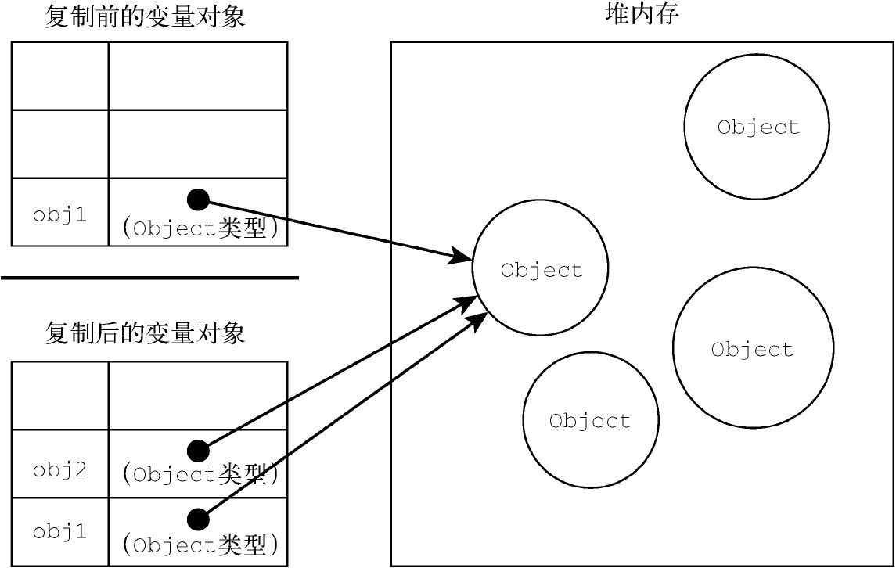

ECMAScript变量可以包含两种不同类型的数据：原始值和引用值。原始值（primitive value）就是最简单的数据，引用值（reference value）则是由多个值构成的对象。
在把一个值赋给变量时，JavaScript引擎必须确定这个值是原始值还是引用值。上一章讨论了6种原始值：Undefined、Null、Boolean、Number、String和Symbol。保存原始值的变量是按值（by value）访问的，因为我们操作的就是存储在变量中的实际值。
引用值是保存在内存中的对象。与其他语言不同，JavaScript不允许直接访问内存位置，因此也就不能直接操作对象所在的内存空间。在操作对象时，实际上操作的是对该对象的引用（reference）而非实际的对象本身。为此，保存引用值的变量是按引用（by reference）访问的。
注意 在很多语言中，字符串是使用对象表示的，因此被认为是引用类型。ECMAScript打破了这个惯例。
原始值和引用值的定义方式很类似，都是创建一个变量，然后给它赋一个值。不过，在变量保存了这个值之后，可以对这个值做什么，则大有不同。对于引用值而言，可以随时添加、修改和删除其属性和方法。比如，看下面的例子：
let person = new object();
person.name = "nicholas";
console.log(person.name); // "nicholas"这里，首先创建了一个对象，并把它保存在变量person中。然后，给这个对象添加了一个名为name的属性，并给这个属性赋值了一个字符串"Nicholas"。在此之后，就可以访问这个新属性，直到对象被销毁或属性被显式地删除。
原始值不能有属性，尽管尝试给原始值添加属性不会报错。比如：
let name = "nicholas";
name.age = 27;
console.log(name.age); // undefined在此，代码想给字符串name定义一个age属性并给该属性赋值27。紧接着在下一行，属性不见了。记住，只有引用值可以动态添加后面可以使用的属性。
注意，原始类型的初始化可以只使用原始字面量形式。如果使用的是new关键字，则JavaScript会创建一个Object类型的实例，但其行为类似原始值。下面来看看这两种初始化方式的差异：
let name1 = "nicholas";
let name2 = new string("matt");
name1.age = 27;
name2.age = 26;
console.log(name1.age); // undefined
console.log(name2.age); // 26
console.log(typeof name1); // string
console.log(typeof name2); // object除了存储方式不同，原始值和引用值在通过变量复制时也有所不同。在通过变量把一个原始值赋值到另一个变量时，原始值会被复制到新变量的位置。请看下面的例子：
let num1 = 5;
let num2 = num1;这里，num1包含数值5。当把num2初始化为num1时，num2也会得到数值5。这个值跟存储在num1中的5是完全独立的，因为它是那个值的副本。
这两个变量可以独立使用，互不干扰。这个过程如图4-1所示。

图 4-1
在把引用值从一个变量赋给另一个变量时，存储在变量中的值也会被复制到新变量所在的位置。区别在于，这里复制的值实际上是一个指针，它指向存储在堆内存中的对象。操作完成后，两个变量实际上指向同一个对象，因此一个对象上面的变化会在另一个对象上反映出来，如下面的例子所示：
let obj1 = new object();
let obj2 = obj1;
obj1.name = "nicholas";
console.log(obj2.name); // "nicholas"在这个例子中，变量obj1保存了一个新对象的实例。然后，这个值被复制到obj2，此时两个变量都指向了同一个对象。在给obj1创建属性name并赋值后，通过obj2也可以访问这个属性，因为它们都指向同一个对象。图4-2展示了变量与堆内存中对象之间的关系。

图 4-2
ECMAScript中所有函数的参数都是按值传递的。这意味着函数外的值会被复制到函数内部的参数中，就像从一个变量复制到另一个变量一样。如果是原始值，那么就跟原始值变量的复制一样，如果是引用值，那么就跟引用值变量的复制一样。对很多开发者来说，这一块可能会不好理解，毕竟变量有按值和按引用访问，而传参则只有按值传递。
在按值传递参数时，值会被复制到一个局部变量（即一个命名参数，或者用ECMAScript的话说，就是arguments对象中的一个槽位）。在按引用传递参数时，值在内存中的位置会被保存在一个局部变量，这意味着对本地变量的修改会反映到函数外部。（这在ECMAScript中是不可能的。）来看下面这个例子：
function addten(num) {
num += 10;
return num;
}
let count = 20;
let result = addten(count);
console.log(count); // 20，没有变化
console.log(result); // 30这里，函数addTen()有一个参数num，它其实是一个局部变量。在调用时，变量count作为参数传入。count的值是20，这个值被复制到参数num以便在addTen()内部使用。在函数内部，参数num的值被加上了10，但这不会影响函数外部的原始变量count。参数num和变量count互不干扰，它们只不过碰巧保存了一样的值。如果num是按引用传递的，那么count的值也会被修改为30。这个事实在使用数值这样的原始值时是非常明显的。但是，如果变量中传递的是对象，就没那么清楚了。比如，再看这个例子：
function setname(obj) {
obj.name = "nicholas";
}
let person = new object();
setname(person);
console.log(person.name); // "nicholas"这一次，我们创建了一个对象并把它保存在变量person中。然后，这个对象被传给setName()方法，并被复制到参数obj中。在函数内部，obj和person都指向同一个对象。结果就是，即使对象是按值传进函数的，obj也会通过引用访问对象。当函数内部给obj设置了name属性时，函数外部的对象也会反映这个变化，因为obj指向的对象保存在全局作用域的堆内存上。很多开发者错误地认为，当在局部作用域中修改对象而变化反映到全局时，就意味着参数是按引用传递的。为证明对象是按值传递的，我们再来看看下面这个修改后的例子：
function setname(obj) {
obj.name = "nicholas";
obj = new object();
obj.name = "greg";
}
let person = new object();
setname(person);
console.log(person.name); // "nicholas"这个例子前后唯一的变化就是setName()中多了两行代码，将obj重新定义为一个有着不同name的新对象。当person传入setName()时，其name属性被设置为"Nicholas"。然后变量obj被设置为一个新对象且name属性被设置为"Greg"。如果person是按引用传递的，那么person应该自动将指针改为指向name为"Greg"的对象。可是，当我们再次访问person.name时，它的值是"Nicholas"，这表明函数中参数的值改变之后，原始的引用仍然没变。当obj在函数内部被重写时，它变成了一个指向本地对象的指针。而那个本地对象在函数执行结束时就被销毁了。
注意 ECMAScript中函数的参数就是局部变量。
前一章提到的typeof操作符最适合用来判断一个变量是否为原始类型。更确切地说，它是判断一个变量是否为字符串、数值、布尔值或undefined的最好方式。如果值是对象或null，那么typeof返回"object"，如下面的例子所示：
let s = "nicholas";
let b = true;
let i = 22;
let u;
let n = null;
let o = new object();
console.log(typeof s); // string
console.log(typeof i); // number
console.log(typeof b); // boolean
console.log(typeof u); // undefined
console.log(typeof n); // object
console.log(typeof o); // object
typeof虽然对原始值很有用，但它对引用值的用处不大。我们通常不关心一个值是不是对象，而是想知道它是什么类型的对象。为了解决这个问题，ECMAScript提供了instanceof操作符，语法如下：
result = variable instanceof constructor如果变量是给定引用类型（由其原型链决定，将在第8章详细介绍）的实例，则instanceof操作符返回true。来看下面的例子：
console.log(person instanceof object); // 变量person是object吗？
console.log(colors instanceof array); // 变量colors是array吗？
console.log(pattern instanceof regexp); // 变量pattern是regexp吗？按照定义，所有引用值都是Object的实例，因此通过instanceof操作符检测任何引用值和Object构造函数都会返回true。类似地，如果用instanceof检测原始值，则始终会返回false，因为原始值不是对象。
注意
typeof操作符在用于检测函数时也会返回"function"。当在Safari（直到Safari 5）和Chrome（直到Chrome 7）中用于检测正则表达式时，由于实现细节的原因，typeof也会返回"function"。ECMA-262规定，任何实现内部[[Call]]方法的对象都应该在typeof检测时返回"function"。因为上述浏览器中的正则表达式实现了这个方法，所以typeof对正则表达式也返回"function"。在IE和Firefox中，typeof对正则表达式返回"object"。